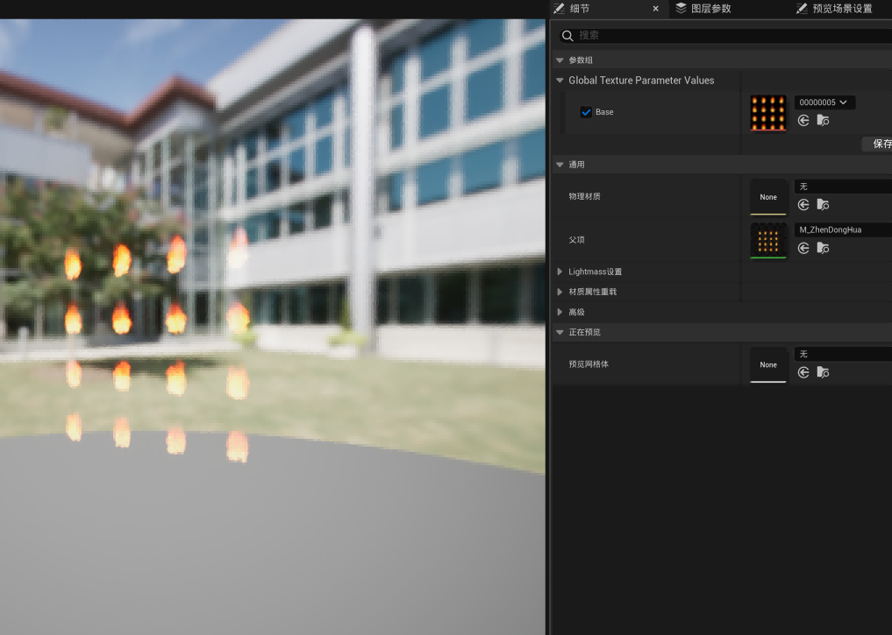

本篇是在刚接触虚幻引擎材质系统而进行学习笔记
UE中的材质（Materials）定义了场景中对象的表面属性，可以将它理解为涂在网格体上用来控制其视觉外观的“涂料”。
在渲染管线中，
着色器是对应每个顶点或像素应该如何渲染的程序。虚幻引擎中的着色器代码转换为GPU硬件可以执行的一系列指令，最终像素颜色就这样输出到了显示。
创建材质
在内容浏览器中右键新建Material材质，并为其改上规范名称，双击材质进入编辑。

进入材质编辑器会看到主材质节点（Main Material Node）后，点击它可在细节面板（Details panel）里进行对它的自身编辑，所有节点都会是可以在细节面板中对自身进行编辑。
在做特效材质时，主材质（Main Material Node）的材质域（Material Domain）、混合模式（Blend Mode）、着色模型（Shading Model），这些属性决定了材质输入口，以来决定特效风格，性能消耗等。
材质节点
每个材质节点都执行自身的工作，它们只是HLSL代码片段的视觉效果呈现。简单的表面可能只需几个材质节点定义材质，如大多PBR预先建模师已绘制好模型贴图
浮点值
在材质节点中有RGBA四维参数，通常由“0~1”来赋予其值，维度越小，所依赖的等价值越大，色彩上色相由H来定，饱和度由S来定，亮度由V来定，不透明度由A定，RGB为定值项，若RGB=0;HSV=0;而在数值相取的情况下，可对其进行覆盖（相乘）。

在Niagara中的每个参数都可以对其设置过滤，以来保证粒子特效的丝滑程度，如Random，Curve等常用功能
变量
在一些情况下，节点可能会包含着变量，可以在材质表达式中引用其他地方的数据。
材质实例
材质实例可以从单个母材质快速创建多个变体或实例。

使用实例有几个优点：
·可以自定义材质实例，无需重新编译母材质。
·可以在材质实例编辑器中向美术师展示参数。意味着他们可以快速直观地创建材质变体，无需编辑更复杂的节点图表。
颜色计算
浮点是一种存储单一数值的变量，可以是正数也可以是负数，浮点（Float）是浮点数（Floating-point）简称，表示该数字包含一个小数，不是整数（Int）。
浮点在做母材质时，需规范使用与命名，以便于后续美术师进行调整参数（Param）
| 数据类型 | 定义 | 示例 |
|---|---|---|
| 浮点（Float） | 储存一个浮点值 | （1.0） |
| 浮点2（Float2） | 储存两个浮点值 | （1.5，2.0） |
| 浮点3（Float3） | 储存三个浮点值 | （0.0，1.0，3.5） |
| 浮点4（Float4） | 储存四个浮点值 | （0.5，1.0，0.2，0.9） |
四、学习地址
官方学习文档： Epic官方教学文档